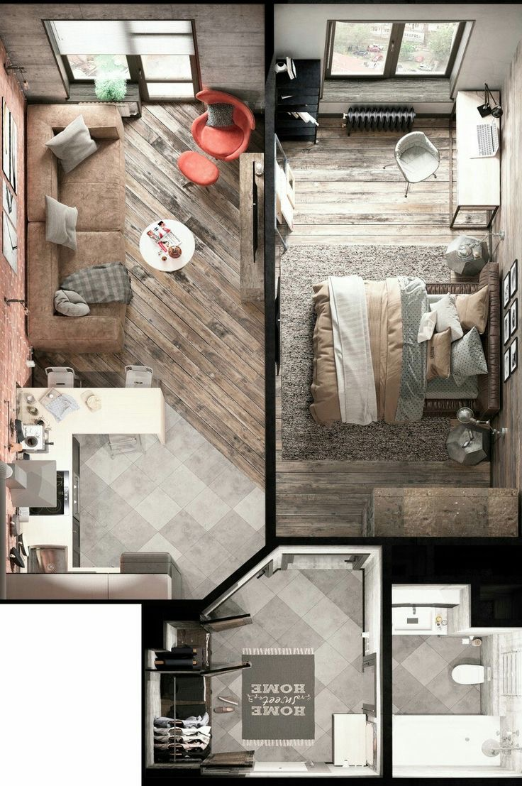
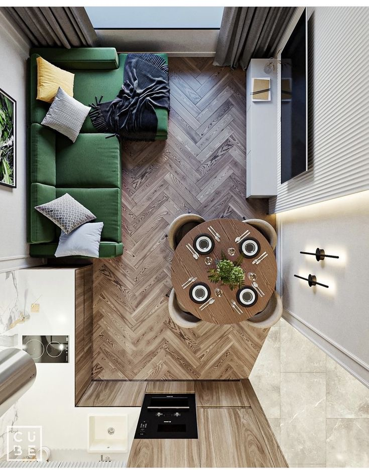
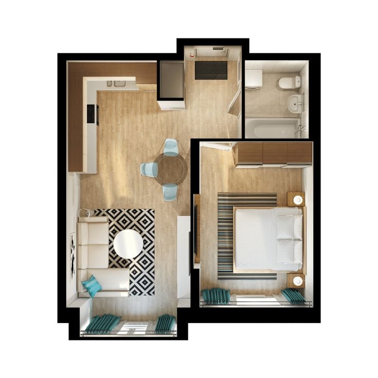
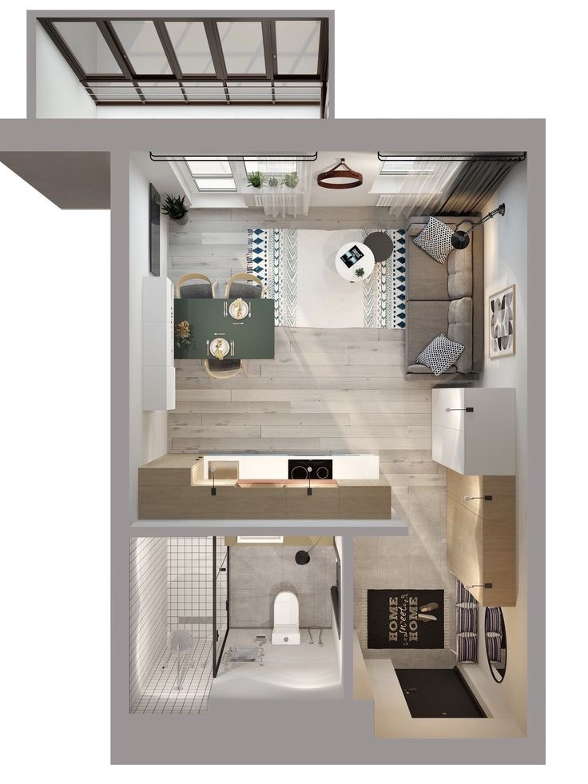
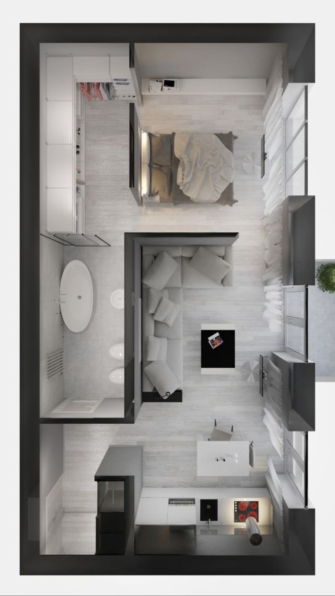
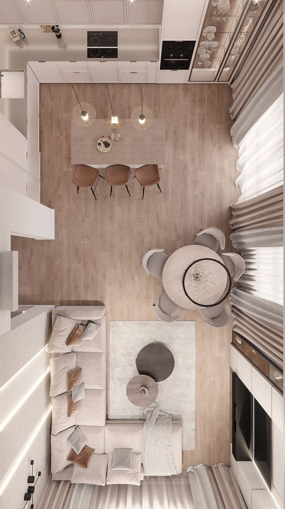

О компании
Наша компания специализируется на разработке дизайн-проектов для различных объектов, включая жилые и коммерческие помещения, офисы, рестораны, отели и другие. Мы предлагаем полный цикл услуг – от концептуального проектирования до реализации проекта.
Написать намУслуги

Разработка дизайна квартиры создание уникального и функционального интерьера, который будет отражать индивидуальные предпочтения и потребности владельца.

Сбор информации. Первым шагом является сбор информации о владельце квартиры, его предпочтениях, стиле жизни, бюджете и пожеланиях по дизайну. Также важно учитывать особенности планировки квартиры и ее общего состояния.

Создание концепции. На основе собранной информации разрабатывается концепция дизайна, которая будет определять стиль, цветовую гамму, материалы и мебель для интерьера квартиры.

Планирование. Для эффективной организации пространства квартиры необходимо разработать план расположения мебели, осветительных приборов и декора. Важно учитывать функциональность и удобство использования каждого помещения.

Выбор материалов и мебели. После утверждения концепции дизайна необходимо выбрать подходящие материалы для отделки стен, пола, потолка и других поверхностей, а также подобрать мебель и аксессуары, соответствующие стилю интерьера.

Реализация проекта. После завершения всех предыдущих этапов начинается реализация проекта, которая включает в себя закупку материалов и мебели, проведение строительных и отделочных работ, установку мебели и декора.